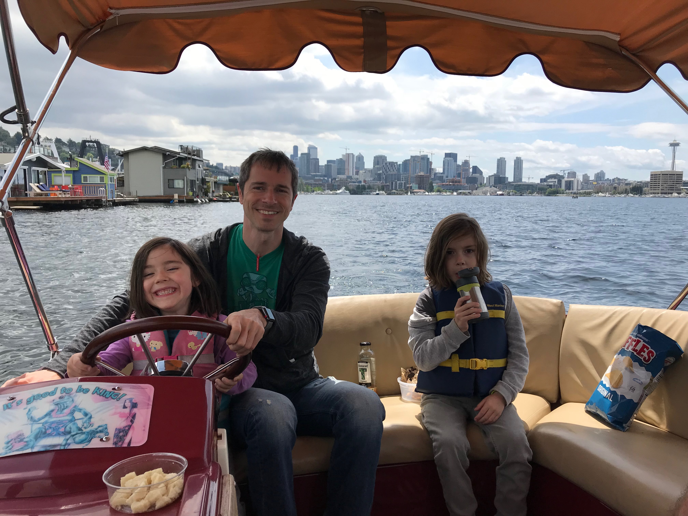
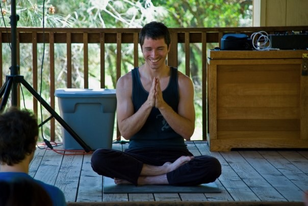
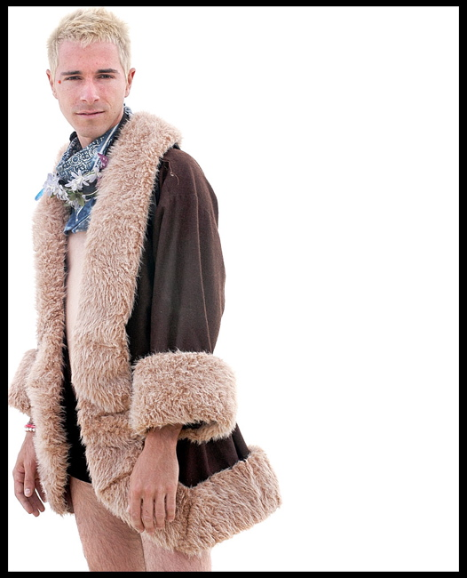
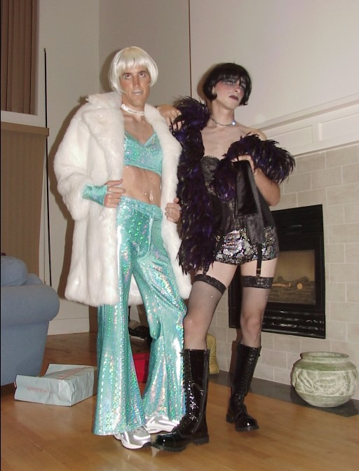
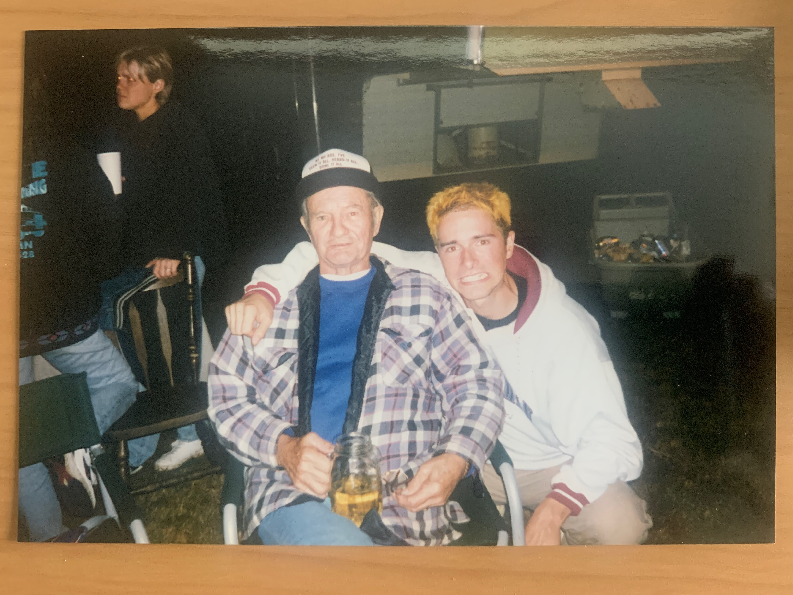
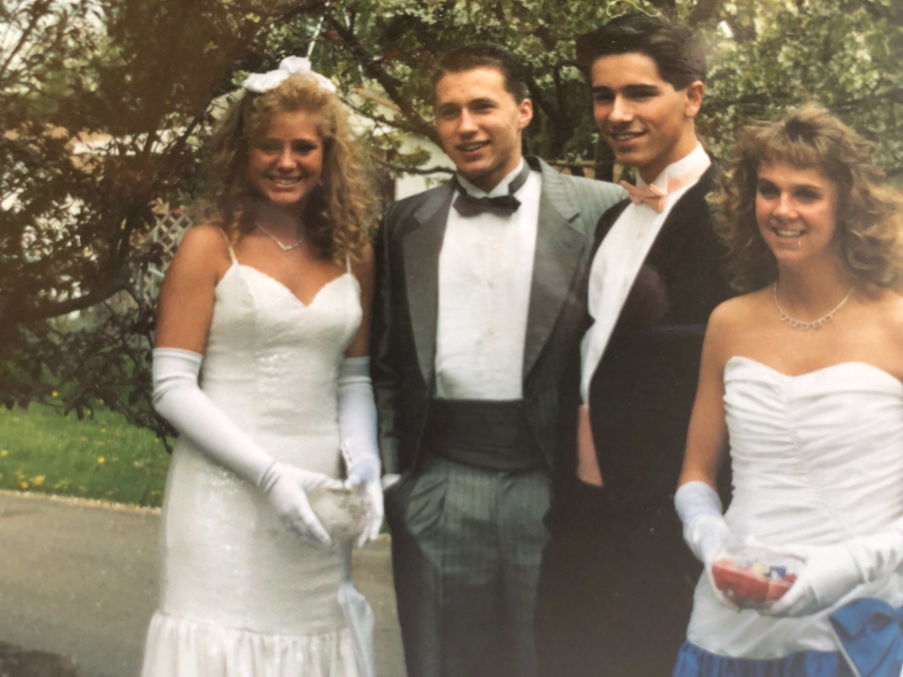
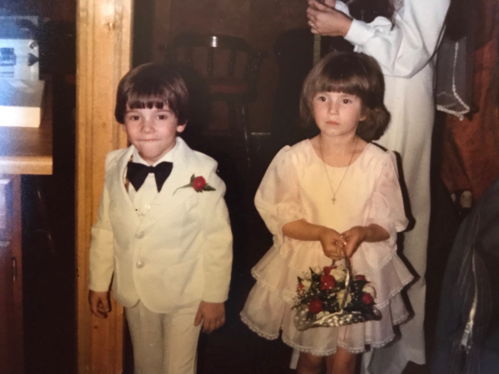
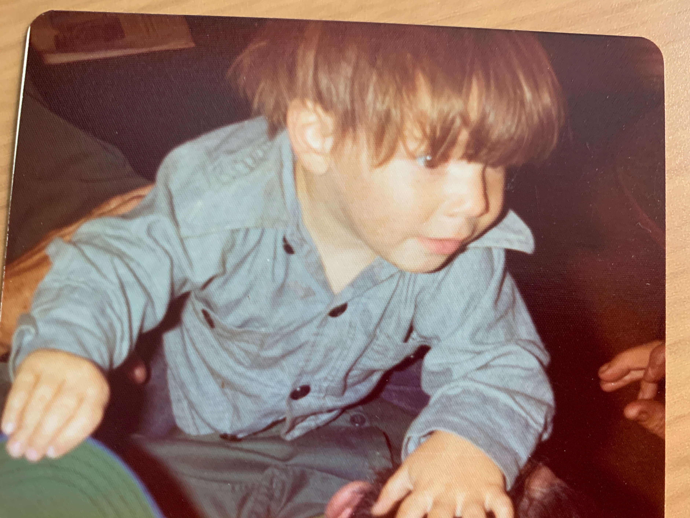

Who is this guy really? You clicked on my picture, so maybe you want to see.
2019 Seattle, Cherry Blossom Festival

2019 Seattle, Volunteer Park
2018 Seattle, Lake Union with Offspring

2015 Seattle, Halloween
2009 Northern California, Some Hippie Hotspring

2008 Ulan Ude
2007 Tokyo
2004 Black Rock City

2002 San Francisco

1998 South Bend (Washington)

1991 Kent (Washington)

1986 Kent (Washington)
1978 Kodiak

1974 Kodiak
